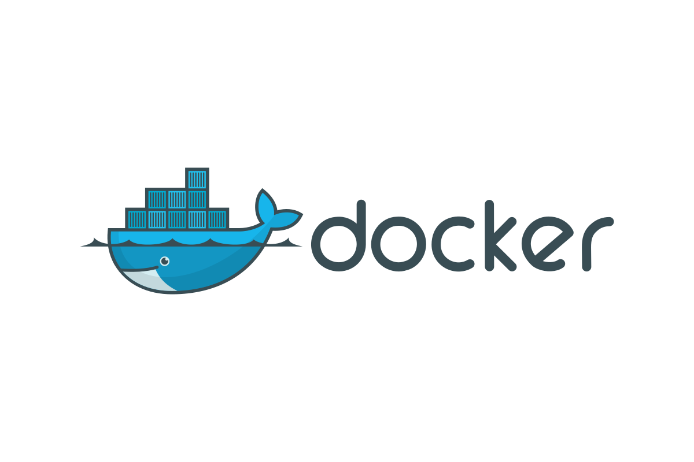

Meet the Doc(ker)

If you are an aspiring Developer or SRE, you will eventually come across the term DOCKER! Docker is essential these days. The main goal of this write-up is to explain everything I have learned about Docker, from basics to intermediate to advanced. It’s a win-win scenario: I will be explaining what I’ve learned (which helps reinforce my understanding – Feynman Technique), and you will have the opportunity to learn what you might have missed or want to revise. Today we will focus on WHYs for using Docker as a containerisation tool. Let's get started!
Quick links
What is Docker?
Docker is a tool for containerization. Is that all? Yes, that’s it. Similar to Docker, there are many other containerization tools such as Podman, CRI-O, Containerd, and rkt (Rocket). So, our focus now is to answer the question: What is containerization?
What is Containerization?
Containerization is the process of running different processes in isolation with their own dependencies on a single local system.
It may seem simple, but let’s dive deeper into the problems it solves.
Scenario 1
You have two Python applications that you want to run on your local system. The Python version on your system is 3.10, but one application requires Python 3.7 and the other requires Python 3.8.
You think, "Let’s give it a try. What if it runs anyway?" You attempt to run the first application, but it throws an error: "RuntimeError: This application requires Python 3.7 or above. Current version: 3.10."
Sad :(
You decide to downgrade your Python version to 3.7. Now it works for the first application, but what about the second application? Upgrading to Python 3.8? While this might work once, you can't run both applications simultaneously on your system.
Wait! You still have a comeback left, you might consider using Python virtual environments.
While virtual environments like venv or pyenv can help manage different Python versions and prevent package conflicts, they can't solve problems related to OS differences. Sometimes code that runs fine on your system fails on a colleague’s system due to differences in OS and system libraries. This issue is not unique to Python; other languages like C/C++, Go, Rust, and Node.js face similar challenges. Although these languages have their own methods for managing packages and versions, the problem of OS and system library differences remains.
You decide to downgrade your Python version to 3.7. Now it works for the first application, but what about the second application? Upgrading to Python 3.8? While this might work once, you can't run both applications simultaneously on your system.
Wait! You still have a comeback left, you might consider using Python virtual environments.
While virtual environments like venv or pyenv can help manage different Python versions and prevent package conflicts, they can't solve problems related to OS differences. Sometimes code that runs fine on your system fails on a colleague’s system due to differences in OS and system libraries. This issue is not unique to Python; other languages like C/C++, Go, Rust, and Node.js face similar challenges. Although these languages have their own methods for managing packages and versions, the problem of OS and system library differences remains.
The Problems
The issues we just saw are:
- Environmental Inconsistency: Applications behave differently in production, development, and testing environments due to differences in system configuration, libraries, and OS.
- Lack of Isolation: Applications with different versions of dependencies cannot be run simultaneously on a single system.
Scenario 2
On any given day, if you choose to use VMs (virtual machines) to run applications with different dependencies to achieve isolation on a single local system, think again!
It's true that VMs can help prevent the problem we face regarding system dependencies and differences in OSs. However, it’s a very resource-intensive solution.
VMs use OS images (e.g., .iso files), which include a bootloader, kernel, filesystems, packages, etc., to load an operating system inside your local system that already has its own OS running. Essentially, VMs give us the ability to run multiple operating systems inside a single local system, but using VMs solely to run applications is not an efficient solution. Just imagine: your CPU and RAM are now being utilized by the kernel and system programs of both your local system and the VMs simultaneously. Therefore, running multiple VMs just to support applications is resource-intensive. This can significantly degrade the performance of both your system and the applications, placing a heavy load on your resources.
The Problems
- Resource Intensive: Even though VMs can provide isolation by running different OSs in a single system, it will be very resource intensive.
Scenario 3
Say your application has been running successfully on your server, but now it’s gaining popularity. With increasing users, you start facing performance issues. So, what’s the solution? Do you simply throw more money at the problem by adding more servers? While that might seem like a quick fix, it also involves provisioning new servers, installing all necessary dependencies, and deploying the application multiple times. This process can become time-consuming, expensive, and inefficient, especially as user demand continues to grow.
Apart from scaling, if you are using traditional DevOps practices to integrate your code, building, testing and deploying them which lacks automation will cause higher risk of human error, slower feedback loops, less frequent releases, etc.
Apart from scaling, if you are using traditional DevOps practices to integrate your code, building, testing and deploying them which lacks automation will cause higher risk of human error, slower feedback loops, less frequent releases, etc.
The Problems
- Scaling: Even though VMs can provide isolation by running different OSs in a single system, it will be very resource intensive.
- DevOps practices: Manual Techniques prevent productivity.
How Docker helps???
Now that we have discussed some of the problems in detail, let's look at how Docker addresses them.
Docker has a concept of images, which are like blueprints or plans for real-world projects, containing everything needed to make the project a reality. Docker images specifies the requirements with the exact versions of the dependencies making the project error free.
Let’s say you've developed a Python project on your Ubuntu server, but your friend has a Windows machine with a different version of Python. No worries—just share the Docker image you’ve built. It includes dependencies like Ubuntu, Python, and the necessary commands to install the required packages. All your friend has to do is run the image and boom! The Python application is now running on your friend's machine, without the need for a separate local system or VM for Ubuntu, or installing a different Python version. This provides a solution for environmental inconsistency. Due to portable in nature we can use this image build and run the containers in multiple systems.
Docker images can be pulled from docker registery (the site is called Docker hub) or can be manually created using Dockerfile.
Docker has a concept of images, which are like blueprints or plans for real-world projects, containing everything needed to make the project a reality. Docker images specifies the requirements with the exact versions of the dependencies making the project error free.
Let’s say you've developed a Python project on your Ubuntu server, but your friend has a Windows machine with a different version of Python. No worries—just share the Docker image you’ve built. It includes dependencies like Ubuntu, Python, and the necessary commands to install the required packages. All your friend has to do is run the image and boom! The Python application is now running on your friend's machine, without the need for a separate local system or VM for Ubuntu, or installing a different Python version. This provides a solution for environmental inconsistency. Due to portable in nature we can use this image build and run the containers in multiple systems.
Docker images can be pulled from docker registery (the site is called Docker hub) or can be manually created using Dockerfile.
FROM ubuntu:latest
WORFKDIR /app
RUN apt-get update && \
apt-get install -y python3 python3-pip &&\
COPY requirements.txt .
RUN pip3 install --no-cache-dir -r requirements.txt
COPY . .
CMD ["python3", "app.py"]
Above is an example of Dockerfile to build an image that will run a python application by installing all the required packages in a ubuntu base image, we will dive deep into Dockerfile and Docker images in our upcomming talks!
Once you have saved the file with the name "Dockerfile" run the command docker build -t python:ubuntu . The above command will create an image out of it, generating an image id. In case you have named your Dockerfile something else, you can use the below command -
docker build -f custom_name_of_dockerfile -t name_of_your_image .
Once the image is built, it's time to see our application running seamlessly, and for that, we need to create a running container. What is a container? Like a container that stores stuff? Yes, but this container holds your application and its dependencies, and it can also run the application. It’s essentially a live container! Let's recall what else a container can do—it separates things out and provides isolation. Docker containers can run different applications with different dependencies and versions in isolation, preventing any kind of conflicts on a single system. Infact if these containers are supposed to run same applications with same dependencies just use that same image to create multiple similar conatainers, cool I know.
Now that we have an idea of how Docker isolates processes, let’s dig a little deeper to understand why it’s not resource-intensive. You might wonder, considering Docker images use operating systems like Ubuntu (as seen in our previous example of Docker images and Dockerfiles), wouldn’t that generate a significant load on our system’s resources?
Well, here’s the key: Docker doesn’t install a separate OS kernel. Instead, it shares the kernel from your local system for resource management. The only components that get installed are the minimal user-space elements, which include the necessary system libraries, commands, utilities, configuration files, and some background services like daemons. These user-space components run outside the kernel, which significantly reduces the resource footprint compared to virtual machines.
To build and run a container, use the command: docker run -d -p hostport:containerport --name name_of_container image_name, where -d runs the container in detached mode (in the background), -p specifies port mapping (which port of the host will map to which port of the container), and the --name flag assigns a name to the container. You can skip the --name flag, and Docker will assign a unique, random name for the container.
The rest two issues which we are yet to find out if Docker is able to solve are Scaling, DevOps practices. Let's go.
Fast and efficient Scaling in docker is possible with Docker compose, a tool to manage mutiple containers which benifits if anyone seeking to implement multi-tier application(which involves backend services, databases,etc) using docker or wants to scale its applications to manage high traffic.
In DevOps, along with scaling and environmental inconsistency, managing CI/CD pipeline was a challenge, in which two of them we have already discussed how docker solves them. Docker allows you to streamline your CI/CD process. Every time a developer pushes new code, the CI pipeline automatically builds a new Docker image of the application, runs tests inside the container, and pushes the tested image to a container registry. From there, CD tools can quickly deploy the container to any environment, whether on cloud platforms like AWS, GCP, or Kubernetes clusters. Other tools like Jenkins, Ansible, Terraform further reduces manual work on CI/CD pipelines making the process more productive.
Thus, containerization is indeed important, and due to its user-friendly interface and strong community support, Docker has proven to be a highly useful tool these days. Docker indeed has many limitations for which other containerisation tools can be a good replacement but again, that depends upon the goal and preferences.
A small suggestion, if you want to try docker, Docker's documentations has done a very good job. Look for the sections "Guide" which specifically for concepts and introduction with docker utilities, "Reference" for CLI utilities and commands with proper explanation and "Manuals" for deep dive. Happy exploring!
Once you have saved the file with the name "Dockerfile" run the command docker build -t python:ubuntu . The above command will create an image out of it, generating an image id. In case you have named your Dockerfile something else, you can use the below command -
docker build -f custom_name_of_dockerfile -t name_of_your_image .
Once the image is built, it's time to see our application running seamlessly, and for that, we need to create a running container. What is a container? Like a container that stores stuff? Yes, but this container holds your application and its dependencies, and it can also run the application. It’s essentially a live container! Let's recall what else a container can do—it separates things out and provides isolation. Docker containers can run different applications with different dependencies and versions in isolation, preventing any kind of conflicts on a single system. Infact if these containers are supposed to run same applications with same dependencies just use that same image to create multiple similar conatainers, cool I know.
Now that we have an idea of how Docker isolates processes, let’s dig a little deeper to understand why it’s not resource-intensive. You might wonder, considering Docker images use operating systems like Ubuntu (as seen in our previous example of Docker images and Dockerfiles), wouldn’t that generate a significant load on our system’s resources?
Well, here’s the key: Docker doesn’t install a separate OS kernel. Instead, it shares the kernel from your local system for resource management. The only components that get installed are the minimal user-space elements, which include the necessary system libraries, commands, utilities, configuration files, and some background services like daemons. These user-space components run outside the kernel, which significantly reduces the resource footprint compared to virtual machines.
To build and run a container, use the command: docker run -d -p hostport:containerport --name name_of_container image_name, where -d runs the container in detached mode (in the background), -p specifies port mapping (which port of the host will map to which port of the container), and the --name flag assigns a name to the container. You can skip the --name flag, and Docker will assign a unique, random name for the container.
The rest two issues which we are yet to find out if Docker is able to solve are Scaling, DevOps practices. Let's go.
Fast and efficient Scaling in docker is possible with Docker compose, a tool to manage mutiple containers which benifits if anyone seeking to implement multi-tier application(which involves backend services, databases,etc) using docker or wants to scale its applications to manage high traffic.
In DevOps, along with scaling and environmental inconsistency, managing CI/CD pipeline was a challenge, in which two of them we have already discussed how docker solves them. Docker allows you to streamline your CI/CD process. Every time a developer pushes new code, the CI pipeline automatically builds a new Docker image of the application, runs tests inside the container, and pushes the tested image to a container registry. From there, CD tools can quickly deploy the container to any environment, whether on cloud platforms like AWS, GCP, or Kubernetes clusters. Other tools like Jenkins, Ansible, Terraform further reduces manual work on CI/CD pipelines making the process more productive.
Thus, containerization is indeed important, and due to its user-friendly interface and strong community support, Docker has proven to be a highly useful tool these days. Docker indeed has many limitations for which other containerisation tools can be a good replacement but again, that depends upon the goal and preferences.
A small suggestion, if you want to try docker, Docker's documentations has done a very good job. Look for the sections "Guide" which specifically for concepts and introduction with docker utilities, "Reference" for CLI utilities and commands with proper explanation and "Manuals" for deep dive. Happy exploring!
© Copyright 2024. All right Reserved.